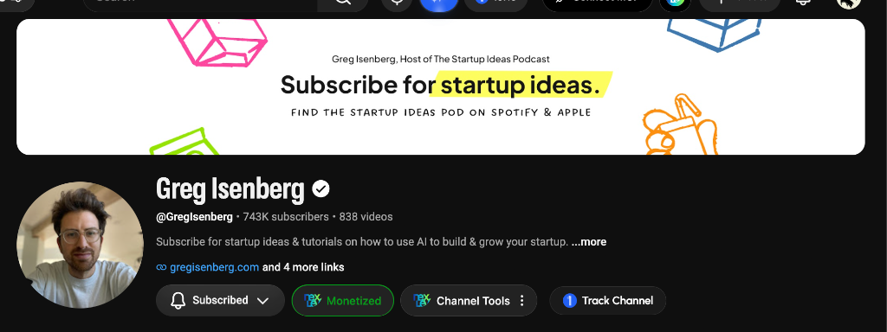
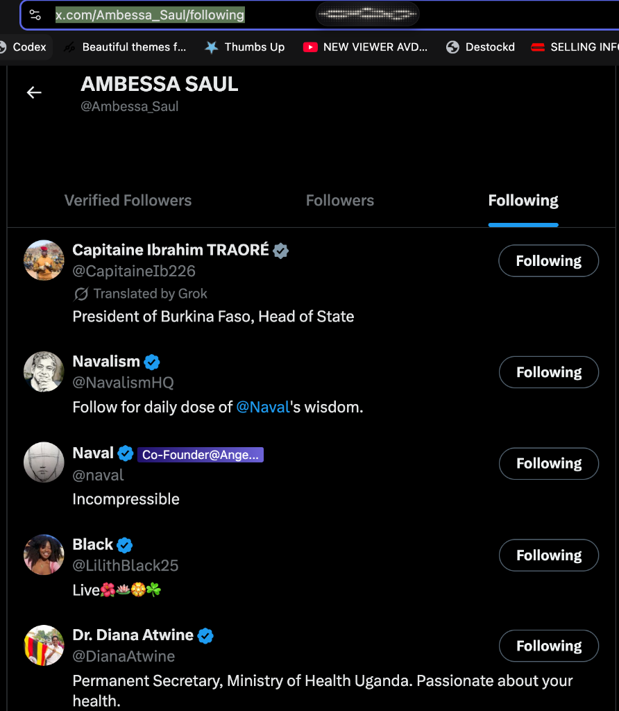
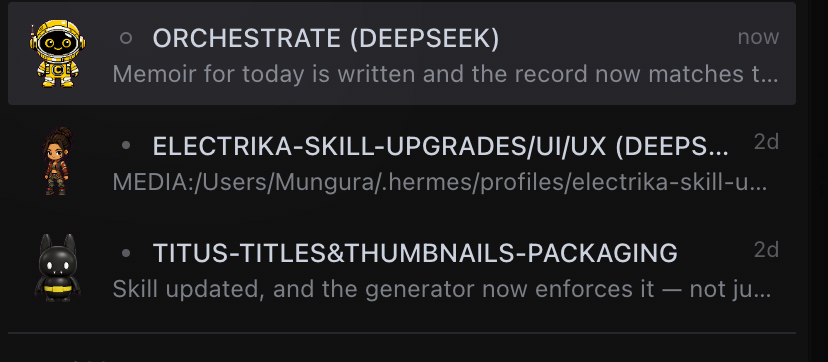
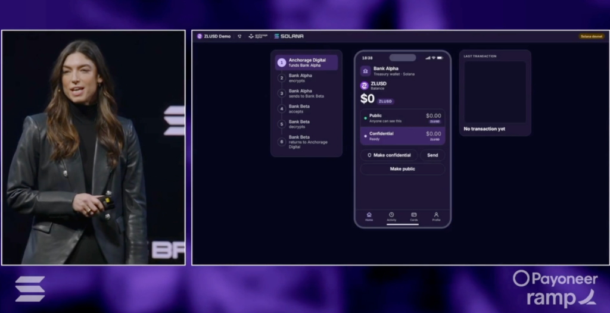

14 direction images, loaded straight from the public repo. Each one carries a job. If a picture is missing here, the file is missing in the repo.
01-ideabrowser-everyone-is-lazy.pngeveryone is lazy - the purchase test02-alex-kwon-laziest-person.pngdesign for the laziest user, one action on screen

03-greg-isenberg-youtube-channel.pngone promise in the banner, reads at thumbnail size04-ideabrowser-pinned-signal-in-noise.pngbranded artwork carries the pin05-greg-isenberg-pinned-content-strategy.pngthe pin is the content strategy06-greg-isenberg-x-profile-frontrun.pngsame face handle banner across X and YouTube, product panel07-boldness-to-brains-ratio.pngtwo axes, four quadrants, honest placing

08-x-following-political-list.pngthe follow graph is the editorial brief09-frontrun-pro-trending-panel.pngdecision-maker panel, windowed strength

10-hermes-bot-roster.pngnames carry the job11-skills-model-designsystem.pngskills + model + design system, three legs12-email-list-hero-serif.pngone headline, one italic, one proof line, one action13-llm-writing-ticks-42.pngforty-two AI writing tells - the anti-rule sheet

14-zlusd-private-transfer-deck.pngprivate vs confidential made visible, six-step flow